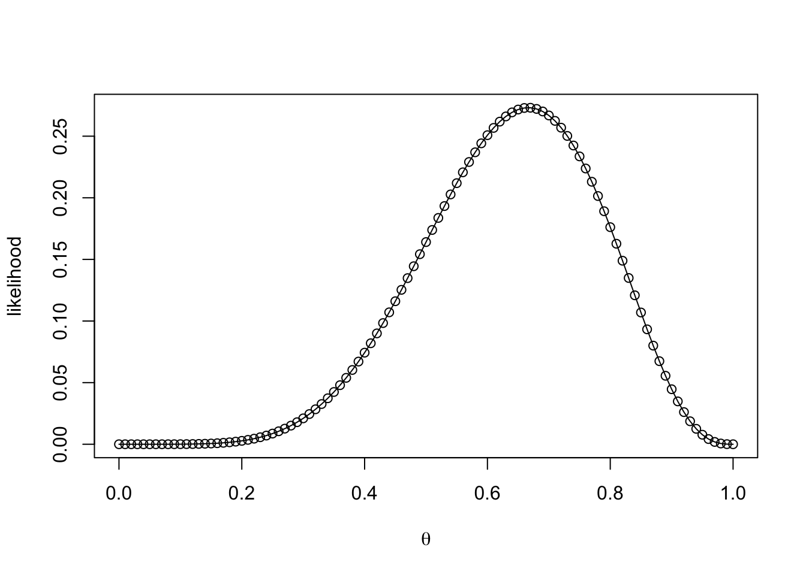
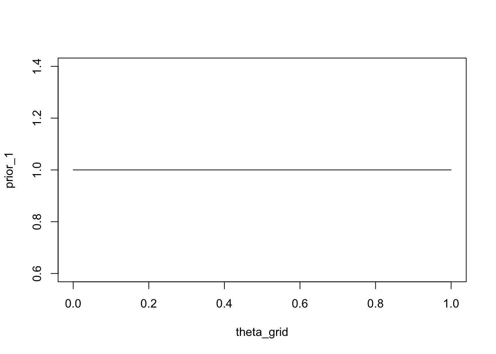
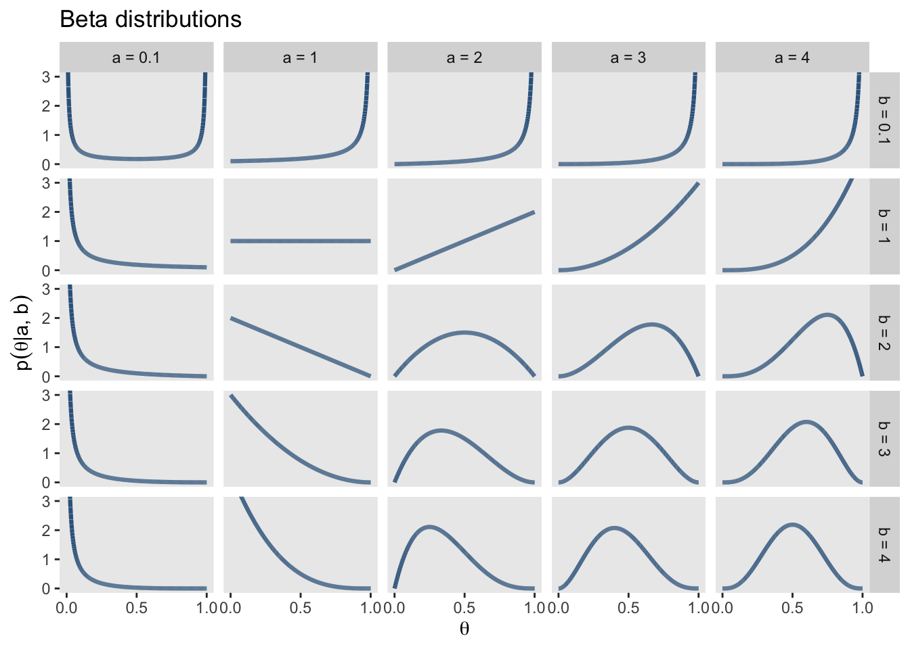
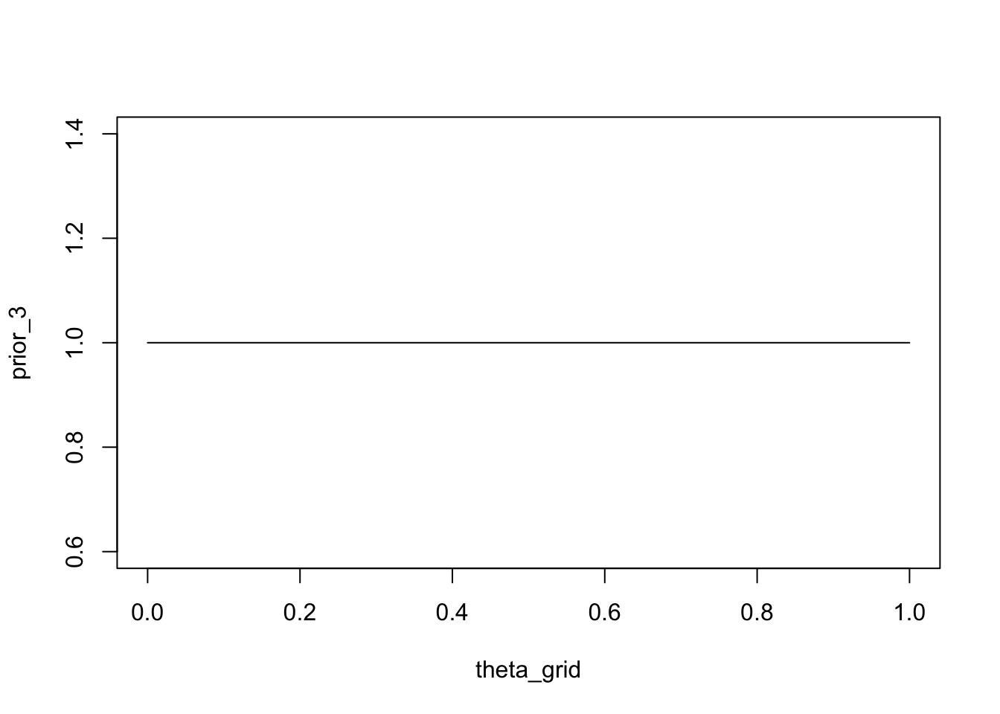
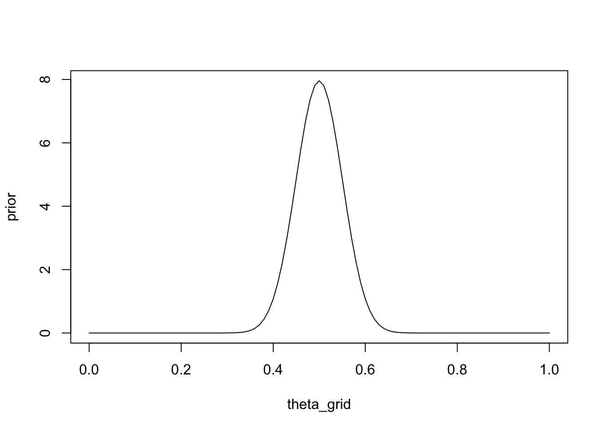
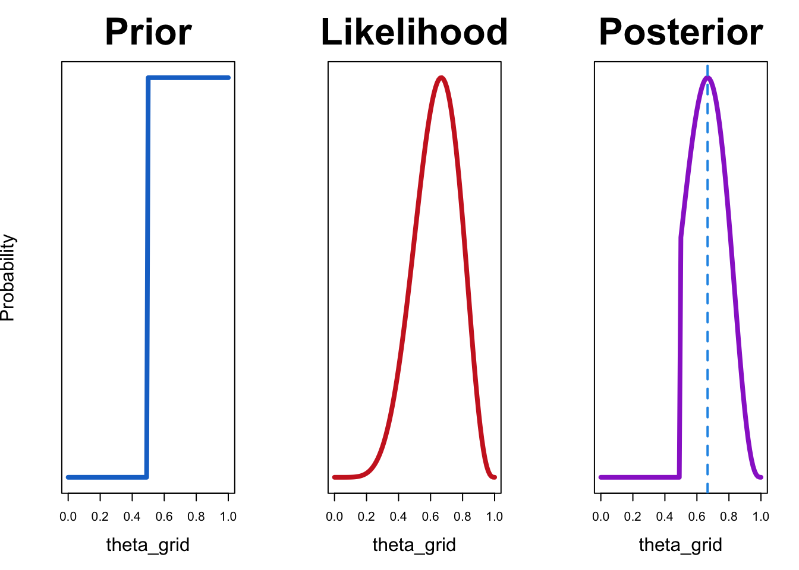
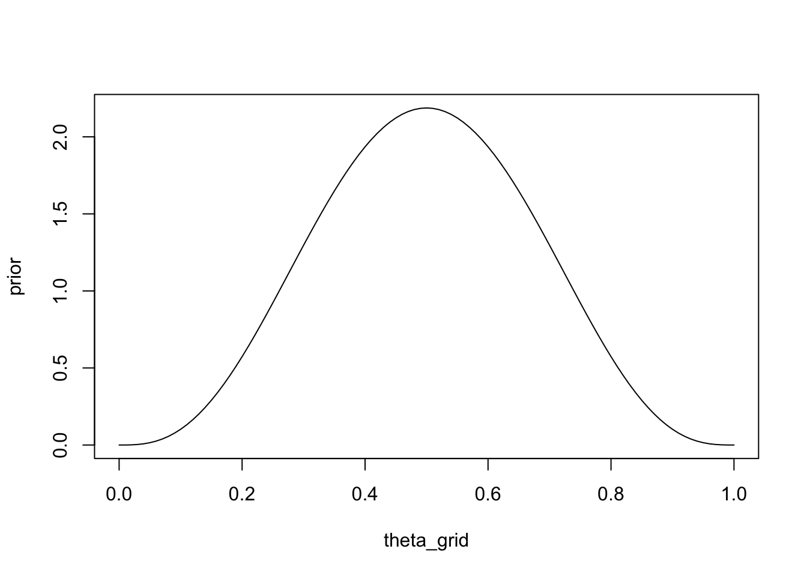
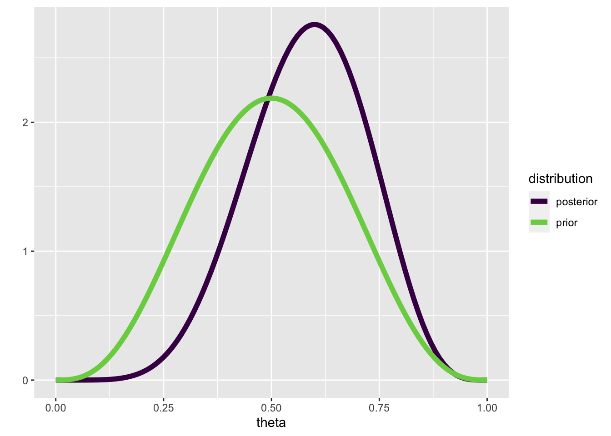
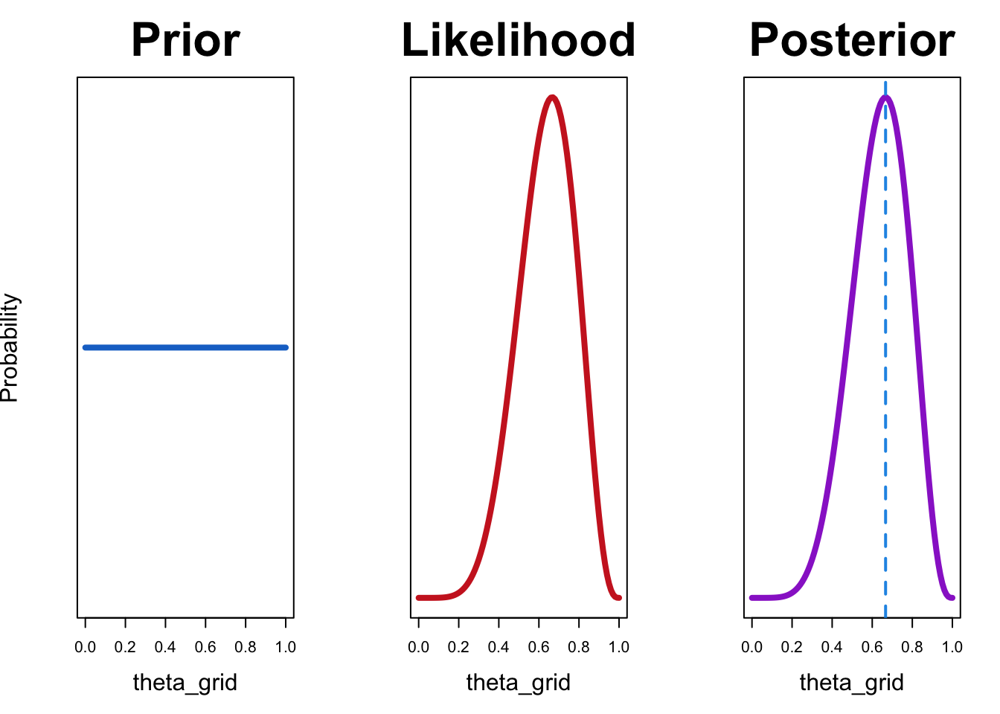

![]()
wins <- 6
games <- 9Einführung in die Bayesianische Statistik
Eine Alternative zu Null Hypothesis Significance Testing (NHST).
Wichtig
Lernziele
In der heutigen Sitzung:
- Einführung in die Bayesianische Inferenz
- Parameterschätzung vs Modelle vergleichen
Bayesian Inference
Parameter schätzen vs Hypothesen testen
Ein t-Test ist ein Beispiel für den statistischen vorherrschenden Ansatz in den Neuro- und Sozialwissenschaften. Diese Vorgehensweise wird frequentistische Statistik genannt. In der traditionellen Weise, wie diese unterrichtet wird, werden oft zwei Dinge vermischt: 1) Parameterschätzung und 2) Hypothesentests.
Wir werden nun einen anderen Ansatz kennenlernen: die Bayesianische Statistik. Dieser Ansatz ist nicht neu, hat aber erst in den letzten Jahren Verbreitung gefunden. Dies hat unter anderem damit zu tun, dass die Berechnungen, die für die Bayes’sche Statistik nötig sind, erst mit der Verfügbarkeit von schnellen Computern möglich wurden.
Wir werden nun anhand eines simplen Beispiels zuerst die Bayes’sche Parameterschätzung kennenlernen.
Two players are playing a game of cards. You observe that they play 9 games, and that player A wins 6 of those. Now you would like to estimate the probability that player A will win the next game. Another way of putting it that you would to estimate the ability of player A to beat player B at this particular game.
You know that the probability of success must lie in the range \([0, 1]\). What you might not be aware of is that you are assuming a certain probability model, and the probability of success is a parameter of that model. Let’s take a closer look:
We know that the number of \(k\) successes in \(n\) games follows a binomial distribution with parameters \(n\) and \(\theta\). To make things simpler, we also know that each individual game is independent of the others, and the probability of success \(\theta\) is the same for each game. Each success therefore follows a Bernoulli distribution with parameter \(\theta\).
\[ y_i \sim \mathcal{Bernoulli}(\theta) \]
I will generally use the notation \(y\) for a variable that is observed, i.e. the data.
\(y_i\) is the \(i\) th observation in the data, meaning that it tells us whether player A won the game or not on trial \(i\). \(\theta\) is the probability of success for each individual game; this is a parameter of our model (\(\mathcal{M}\)).
Previously, we used maximum likelihood to estimate \(\theta\) - we will repeat this briefly here.
The goal is to figure out the “best” value of \(\theta\), i.e. the value that maximizes the likelihood of observing the data. To do this, we need to consider a range of possible values of \(\theta\) (we already know that this range is \([0, 1]\), so that part is easy). We will consider 101 values of \(\theta\) between 0 and 1, and compute the likelihood of observing the data for each value of \(\theta\).
n_points <- 101
theta_grid <- seq( from=0 , to=1 , length.out = n_points )Assuming that both players have an equal chance of winning, the parameter should be \(\theta = 0.5\). The probability of the data given \(\theta = 0.5\) is:
dbinom(x = wins, size = games, prob = 0.5)[1] 0.1640625The probability of winning 6 out of 9 games, given that both players are equally likely to win, is 0.1640625.
We can also compute the probability of A winning 6, 7, 8 or 9 games, using the cumulative distribution function of the binomial distribution.
1 - pbinom(q = 5, size = games, prob = 0.5)[1] 0.2539063or
pbinom(q = 5, size = games, prob = 0.5, lower.tail = FALSE)[1] 0.2539063pbinom() gives us the lower tail probability, which is the probability that the number of successes is less than or equal to the given value, by default.
p-value
Does this seem familiar?
If we want to quantify our null hypothsis that both players are equally likely to win, we would assume that \(\theta=0.5\). Computing the probability of the data under the null is exactly what we have just done. We then plug in the actual data, i.e. 6 out of 9, and the upper tail probability is the p-value. In this case, the p-value is approximately \(0.25\). Using cut-off of 0.05, we would not reject the null hypothesis, and conclude that there is not enough evidence that player A is better than player B (this is a one-sided test).
Now we compute the probability of the data under all parameter values under consideration. In R, this is very simple, since all functions are vectorized.
likelihood <- dbinom(wins , size = games , prob = theta_grid)plot(likelihood)
We can see in the above figure that the probability of observing the data is small for a lot of values of \(\theta\). The probability of observing the data, or the likelihood, is maximal for the value 0.6666667:
theta_grid[which.max(likelihood)][1] 0.67What we have done so far highlights the distinction between parameter estimation and hypothesis testing. Computing the tail probability under the null (\(\theta=0.5\)) is a hypothesis test, and estimating \(\theta\) is parameter estimation.
Bayes’sche Inferenz
So far, we haven’t considered any prior knowledge we might have had about which parameters are the most likely a priori. In fact, as we will see a bit further down, we have implicitly assumed that all parameters are equally likely. We will now introduce a new concept: a prior distribution for the parameter(s) we are trying to estimate1.
We will then use that prior belief in order to obtain a posterior belief over the possible parameter values. To do this, we need to multiply the prior probability of each parameter value by the likelihood of the data, i.e. by the probability of observing the data given that parameter value. This is an application of Bayes theorem:
\[ p(\theta|y) = \frac{ p(y|\theta) * p(\theta) } {p(y)} \]
This states that the posterior probability of \(\theta\) given the observed data \(y\) is equal to the probability of the data, multiplied by how probable each value of \(\theta\) is a priori. You can think of it like this: each parameter value is weighted according to how well it predicts the data. The product \(p(y|\theta) * p(\theta)\) is then divided by the probability of the data, which in this case is summed over all possible parameter values. This step serves to normalize the posterior, so that it sums to \(1\). This essentially turns the unnormalized posterior into a proper probability distribution.
\[ p(y) = \sum_{\theta}p(y|\theta) * p(\theta) \]
When we are interested in estimating the parameters of a given model, we can often neglect the (constant for a model) normalizing term \(p(y)\). This term, often called the evidence, reflects the probability of the data, averaged over all parameter values. Written without the normalizing constant, Bayes rule is often written as:
\[ p(\theta|y) \propto p(y|\theta) * p(\theta) \]
Bayesian inference in a nutshell
Represent your prior belief by a probability distribution over the possible parameter values. This is a principled way of dealing with uncertainty.
Use the likelihood to weight the prior belief.
Obtain a posterior belief over the possible parameter values.
The term belief is used synonymously with probability distribution.
Bayesian inference in the card game: a numerical example
Recall that we defined a sequence of 101 points between 0 and 1, which represented the possible \(\theta\) values.
n_points <- 101
theta_grid <- seq( from=0 , to=1 , length.out = n_points )For each of these, we computed the likelihood, that is the probability of observing the (fixed) data, given the parameter. Now, we can make our knowledge about the probability of each parameter value explicit. At first, we will assume that all parameters are equally likely. We will assign the probability of 1 to each parameter value. This is our prior distribution.
plot(theta_grid, prior_1, "type" = "l")
We could also express the belief that player is at least as good as player B, i.e. they are equally good or A is better than B. One way of doing this is to assign a probability of \(1\) to parameter values greater than or equal to \(0.5\), and the value \(0\) to parameter values less than \(0.5\).
prior_2 <- ifelse(theta_grid < 0.5, 0, 2)plot(theta_grid, prior_2, type = "l")
A more systematic way of doing this is to use a parameterized probability distribution that expresses our beliefs about the parameter.
Note
A family of probability distributions that are suitable for parameters that lie in the interval \([0,1]\) is the Beta distribution. This distribution has \(2\) parameters \(\alpha\) und \(\beta\), which can be interpreted as the prior number of successes and the number of failures, respectively. The number of trials is therefore \(\alpha + \beta\). ?@fig-betadist shows a number of possible Beta distributions for various settings of \(\alpha\) and \(\beta\).
── Attaching core tidyverse packages ──────────────────────── tidyverse 2.0.0 ──
✔ dplyr 1.1.2 ✔ readr 2.1.4
✔ forcats 1.0.0 ✔ stringr 1.5.0
✔ ggplot2 3.4.2 ✔ tibble 3.2.1
✔ lubridate 1.9.2 ✔ tidyr 1.3.0
✔ purrr 1.0.1
── Conflicts ────────────────────────────────────────── tidyverse_conflicts() ──
✖ dplyr::filter() masks stats::filter()
✖ dplyr::lag() masks stats::lag()
ℹ Use the conflicted package (<http://conflicted.r-lib.org/>) to force all conflicts to become errorsd |>
ggplot(aes(x = x, group = group)) +
geom_line(aes(y = dbeta(x, shape1 = shape1, shape2 = shape2)),
color = "steelblue4", size = 1.1) +
scale_x_continuous(expression(theta), breaks = c(0, .5, 1)) +
coord_cartesian(ylim = c(0, 3)) +
labs(title = "Beta distributions",
y = expression(p(theta*"|"*a*", "*b))) +
theme(panel.grid = element_blank()) +
facet_grid(b~a)Warning: Using `size` aesthetic for lines was deprecated in ggplot2 3.4.0.
ℹ Please use `linewidth` instead.
If we want to use a Beta distribution to express the belief that all values of \(\theta\) are equally likely (uniform prior), we can a Beta distribution with \(\alpha = 1\) and \(\beta = 1\).
prior_3 <- dbeta(x = theta_grid, shape1 = 1, shape2 = 1)plot(theta_grid, prior_3, type = "l")
Finally, we could express the following prior information as a Beta distribution: imagine you had previously observed \(100\) games between A and B, and each won half of the games. You can set \(\alpha\) and \(\beta\) to the number of games won by A, and the number of games won by B, respectively. A won \(50\), and B won \(50\):
prior <- dbeta(x = theta_grid, shape1 = 50, shape2 = 50)plot(theta_grid, prior, type = "l")
Now, we can combine the prior and the likelihood by multiplying them element-wise, i.e. we need to multiply each parameter value with the probability of the data given that parameter.
Note
Recall Bayes theorem:
\[ p(\theta|y) = \frac{ p(y|\theta) * p(\theta) } {p(y)} \]
In R, this is simply:
wins <- 6
games <- 9unstandardized_posterior <- likelihood * priorThis gives us the unnormalized posterior:
\[ p(\theta|y) \propto p(y|\theta) * p(\theta) \]
We can then normalize the posterior distribution by dividing it by \(p(y) = \sum_{\theta}p(y|\theta) * p(\theta)\).
In R we can use the sum() function: sum(unstandardized_posterior).
posterior <- unstandardized_posterior / sum(unstandardized_posterior)We can now plot the resulting normalized posterior distribution.
plot(theta_grid, posterior, type = "l", yaxt = 'n', ylab = 'Probability',
main = "Posterior", cex.lab = 1.5, cex.main = 3)
To make this repeatable, we will write two functions. The first, compute_posterior(), will compute the posterior, given the prior and likelihood, and return a dataframe containing prior, likelihood and posterior. The second, plot_posterior(), will plot all three side-by-side. You can also pass in the maximum likelihood estimate, e.g. 6/9, and this will be plotted as well.
compute_posterior = function(likelihood, prior){
# compute product of likelihood and prior
unstandardized_posterior <- likelihood * prior
# standardize the posterior, so it sums to 1
posterior <- unstandardized_posterior / sum(unstandardized_posterior)
out <- tibble(prior, likelihood, posterior)
out
}plot_posterior <- function(df, mle = 6/9){
with(df, {
par(mfrow=c(1, 3))
plot(theta_grid , prior, type="l", main="Prior", col = "dodgerblue3",
lwd = 4, yaxt = 'n', ylab = 'Probability', cex.lab = 1.5, cex.main = 3)
plot(theta_grid , likelihood, type = "l", main = "Likelihood", col = "firebrick3",
lwd = 4, yaxt = 'n', ylab = '', cex.lab = 1.5, cex.main = 3)
plot(theta_grid , posterior , type = "l", main = "Posterior", col = "darkorchid3",
lwd = 4, yaxt = 'n', ylab = '', cex.lab = 1.5, cex.main = 3)
abline(v = mle, col = 4, lty = 2, lwd = 2)
} )
}You can now try out various prior distributions, and observe the effect on the posterior.
Let’s try out a uniform prior first:
df <- compute_posterior(likelihood, prior)plot_posterior(df)
Note
In this case, the maximum likelihood estimate coincides with the value that maximizes the posterior probability. This is the case because maximum likelihood estimate uses only the likelihood and does not consider prior knowledge. If we are are using a uniform prior, that amounts to saying that all values of \(\theta\) are equally likely. In other words, we have no information as which values are more probable.
Now let’s try out our prior expressing the belief that player A cannot be worse than player B:
df <- compute_posterior(likelihood, prior)plot_posterior(df)
The resulting posterior distribution is zero for all values of \(\theta\) that are less than 0.5. This is because our prior allocates zero probability those values.
Tip
Try out various priors. How do they affect the posterior?
- A prior expressing the belief that B is better than A.
- A prior expressing that belief that either A is a lot better, or B is a lot better.
- A prior expressing the belief that the players are probably as good as each other, and that it is unlikely that either is much better than the other.
The posterior represents our belief about the the possible parameter values, after having observed the data. You can therefore think of Bayesian inference as a method for updating your beliefs, conditional on observed data. You are re-allocating probabilities over parameter values, depending on how well those parameter values predicted the data.
Analytic solution
For a few problem, it is possible to derive an analytic solution. The Bernoulli/Binomial likelihood and Beta prior is one of those.
In the above example, we used a technique called grid approximation to obtain the posterior distribution for a parameter. This means that we tried out various parameter values by constructing a grid, and then computed the posterior by applying Bayes’ rule. This technique was used merely for educational purposes, as it does not scale well to real-world problems. In the simple example of a sequence of binary observations, the parameter of interest (the probability of success \(\theta\) in a Bernoulli trial) is bounded between \(0\) and \(1\) (\(\theta \in [0, 1]\)). Furthermore, there is only \(1\) parameter to estimate. In more complex models, with many parameters, using grid approximation can be very inefficient, or even impossible. In such cases, we usually use numerical methods to approximate the posterior distribution. These methods are know collectively as Monte Carlo sampling, or Markov Chain Monte Carlo (MCMC). Using MCMC, we will not obtain an analytical description of posterior distributions, but instead a collection of random numbers (samples), that are drawn from the posterior distribution. We will use these samples to represent the posterior distribution.
In this particular case, however, we also obtain the posterior distribution \(p(\theta|y)\) analytically. By this, I mean that if we use a Beta distribution to describe our prior belief over the \(\theta\) parameter, and the likelihood is Bernoulli or Binomial, the posterior distribution is also a Beta distribution.
This is shown here for the Binomial likelihood, with the data consisting of \(k\) successes in \(N\) trials.
\[ p(\theta|k, N) = \frac{p(y|\theta) \cdot p(\theta) = \theta^k (1-\theta)^{N-k} \cdot beta(\theta|a, b)}{p(k, N)} \]
where \(a, b\) are the parameters of the Beta distribution.
\[ p(\theta|a, b) = beta(\theta|a, b) = \frac{\theta^{a-1} (1-\theta)^{b-1}} {B(a, b)} \]
The function \(B(a, b)\) is a normalizing constant and ensures that the area under the curve integrates to \(1\).
\[ p(\theta|k, N) = \frac{\theta^{(a+k)-1} (1-\theta)^{(b+N-k)-1}} { B(a+k, b+N-k) } \]
Put more simply:
Tip
If the prior distribution is \(beta(\theta|a, b)\), and the data have \(k\) heads in \(N\) flips, then the posterior distribution is \(beta(\theta|a + k, b + N − k)\).
You can therefore think of the parameters \(a\) and \(b\) as the prior successes and failures in \(N\) trials, and these parameters are updated by observing \(k\) heads in \(N\) flips.
Example
This time, we are using theta_grid merely so we can plot the prior and posterior. Suppose that we have observed 8 games, and that player A has won 4 of those. Our prior should therefore be \(p(\theta|4,4)\)
prior <- dbeta(x = theta_grid, shape1 = 4, shape2 = 4)plot(theta_grid, prior, "l")
If we now observe that player A wins 3 out of the next 4 games, our posterior should be \(p(\theta|4+3,4+1)\)
posterior <- dbeta(x = theta_grid, shape1 = 7, shape2 = 5)tibble(prior = prior,
posterior = posterior,
theta = theta_grid) |>
pivot_longer(c(prior, posterior), names_to = "distribution") |>
ggplot(aes(theta, value, color = distribution)) +
geom_line(size = 2) +
scale_color_viridis_d(end = 0.8) +
ylab("")
We can write a function that updates a Beta prior, given \(k\) successes in \(N\) trials:
posterior <- update_beta(a = 4, b = 4, k = 3, N = 4)tibble(prior = prior,
posterior = posterior,
theta = theta_grid) |>
pivot_longer(c(prior, posterior), names_to = "distribution") |>
ggplot(aes(theta, value, color = distribution)) +
geom_line(size = 2) +
scale_color_viridis_d(end = 0.8) +
ylab("")
Summarizing the posterior
We now need one last step: we need to summarize the posterior distribution. We can do this, for example by computing the mean and standard deviation of the posterior distribution.
To show how this works, we can draw a thousand samples from the posterior distribution. First, we’ll create a posterior.
df <- compute_posterior(likelihood, prior)plot_posterior(df)
Now we’ll draw 1000 random numbers from the posterior.
n_samples <- 1e3
samples <- theta_grid |> sample(size = n_samples, replace = TRUE, prob = df$posterior)head(samples, 10) [1] 0.64 0.64 0.79 0.80 0.82 0.41 0.54 0.49 0.72 0.42Now we can summarize the samples, e.g. by computing the mean or quantiles.
mean(samples)[1] 0.63887The following will give us the median, and a 50% credible interval, i.e. an interval that contains 50% of the mass of the distribution.
We can also use this approach to compute a 95% credible interval.
Warning
This should not be confused with the 95% confidence interval. Can you remember how a confidence interval is defined? What is the difference between a confidence interval and a credible interval?
What we have done so far is to look at Bayesian inference for parameter estimation (in a very simple model). Let’s call this model \(\mathcal{M}\). We have only considered one model at a time, but in the next session we will consider two or models $, which differ in the prior distributions they use. We will then look at methods for comparing models, in order to perform hypothesis testing in a Bayesian framework.
In particular, we will look at how Bayesian model comparison can help, in the case that we have no significant results (see ?@sec-fancyhat).
Footnotes
In frequentist statistics, the concept is meaningless - parameters cannot have distribution. In Bayesian statistics, a prior distribution should reflect everything we know about the parameter, before we consider the data. The prior reflects our belief, which can be subjective, or objective.↩︎
Reuse
Citation
BibTeX citation:
@online{ellis2022,
author = {Ellis, Andrew},
title = {Einführung in Die {Bayesianische} {Statistik}},
date = {2022-05-08},
url = {https://kogpsy.github.io/neuroscicomplabFS23//pages/chapters/bayesian-statistics-2.html},
langid = {en}
}
For attribution, please cite this work as:
Ellis, Andrew. 2022. “Einführung in Die Bayesianische
Statistik.” May 8, 2022. https://kogpsy.github.io/neuroscicomplabFS23//pages/chapters/bayesian-statistics-2.html.